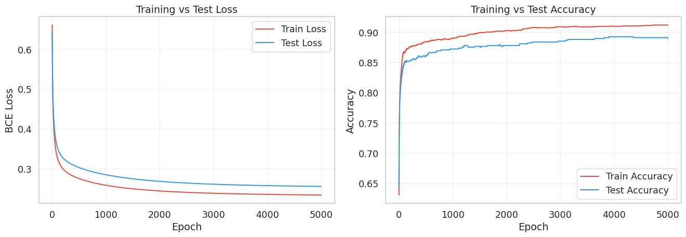

import numpy as np
import matplotlib.pyplot as plt
import seaborn as sns
sns.set_theme(style='whitegrid', font_scale=1.2)Lab3-2. Logistic Regression from Scratch

Objectives
- Understand how swapping a single building block (replacing
IdentitywithSigmoid) transforms a regression model into a binary classifier. - Implement Logistic Regression from scratch using the same
LinearandSigmoidclasses introduced in the lecture, combined with a newBCELoss(Binary Cross-Entropy Loss). - Build a clean
LogisticRegressionclass withfit()andpredict()methods that handles the full forward-backward-update cycle. - Visualize training dynamics and evaluate classification performance using accuracy and a confusion matrix.
NoteFrom Linear Regression to Logistic Regression
In Lab 3-1, you built Linear Regression using Linear(D, 1) followed by Identity(). The output was an unbounded real number representing a predicted price. In this lab, we replace Identity with Sigmoid so the output is squeezed into the range \((0, 1)\), which we interpret as the probability that a sample belongs to the positive class. This single swap, together with changing the loss from MSE to Binary Cross-Entropy, is all it takes to go from regression to classification. The Linear layer, the backward pass mechanics, and the optimizer logic remain exactly the same.
0. Setup
1. Preparing the Dataset
We load the same London houses dataset from Lab 3-1, but instead of predicting the raw price (regression), we create a binary classification target: is the house price above the median price (class 1, “expensive”) or at or below the median (class 0, “affordable”)? Using the median as the threshold gives a naturally balanced dataset with roughly 50% of samples in each class.
from sklearn.model_selection import train_test_split
# Load data
data = np.genfromtxt("../../data/london_houses_transformed.csv", delimiter=",", skip_header=1)
X = data[:, :-1] # All columns except the last one (features)
prices = data[:, -1] # Last column (raw price)
# Create binary target: 1 if price > median, 0 otherwise
median_price = np.median(prices)
Y = (prices > median_price).astype(float).reshape(-1, 1)
print(f"Feature matrix X shape: {X.shape}")
print(f"Target vector Y shape: {Y.shape}")
print(f"Median price threshold: £{median_price:,.0f}")
print(f"Class distribution: {(Y == 1).sum():.0f} expensive, {(Y == 0).sum():.0f} affordable")Feature matrix X shape: (3441, 87)
Target vector Y shape: (3441, 1)
Median price threshold: £1,200,000
Class distribution: 1702 expensive, 1739 affordable# Train / Test split (80/20)
X_train_raw, X_test_raw, Y_train, Y_test = train_test_split(
X, Y, test_size=0.2, random_state=15
)
# Normalize features (fit on training data only to avoid data leakage)
X_mean, X_std = X_train_raw.mean(axis=0), X_train_raw.std(axis=0) + 1e-8
X_train = (X_train_raw - X_mean) / X_std
X_test = (X_test_raw - X_mean) / X_std
N, D = X_train.shape
print(f"Dataset: {X.shape[0]} total samples")
print(f" Train: {N} | Test: {X_test.shape[0]}")
print(f" Features (D): {D}")
print(f" Train class balance: {Y_train.mean():.2%} positive")Dataset: 3441 total samples
Train: 2752 | Test: 689
Features (D): 87
Train class balance: 49.38% positive2. Defining the Layer Building Blocks
2.1 Linear Layer
Forward:
\[z = \mathbf{x}\mathbf{W}^\top + b\]
Backward (given upstream gradient \(\texttt{grad} = \partial \mathcal{L} / \partial z\)):
\[\frac{\partial z}{\partial \mathbf{W}} = \mathbf{x}, \quad \frac{\partial z}{\partial b} = 1, \quad \frac{\partial z}{\partial \mathbf{x}} = \mathbf{W}\]
\[\Longrightarrow \qquad \frac{\partial \mathcal{L}}{\partial \mathbf{W}} = (\underbrace{\frac{\partial \mathcal{L}}{\partial z}}_{\texttt{grad}})^{\top} \!\cdot\; \underbrace{\frac{\partial z}{\partial \mathbf{W}}}_{\mathbf{x}} = \texttt{grad}^\top \mathbf{x}, \qquad \frac{\partial \mathcal{L}}{\partial b} = \sum_i \texttt{grad}_i, \qquad \frac{\partial \mathcal{L}}{\partial \mathbf{x}} = \underbrace{\frac{\partial \mathcal{L}}{\partial z}}_{\texttt{grad}} \!\cdot\; \underbrace{\frac{\partial z}{\partial \mathbf{x}}}_{\mathbf{W}} = \texttt{grad}\;\mathbf{W}\]
class Linear:
def __init__(self, in_dims, out_dims):
bound = 1 / np.sqrt(in_dims)
self.W = np.random.uniform(-bound, bound, size=(out_dims, in_dims))
self.b = np.random.uniform(-bound, bound, size=(out_dims,))
def forward(self, x):
self.x = x
return x @ self.W.T + self.b
def backward(self, grad):
self.deltaW = grad.T @ self.x
self.deltab = grad.sum(axis=0)
return grad @ self.W2.2 Sigmoid Layer
Forward:
\[\sigma(z) = \frac{1}{1 + e^{-z}}\]
Backward (given upstream gradient \(\texttt{grad} = \partial \mathcal{L} / \partial \sigma\)):
\[\frac{\partial \sigma}{\partial z} = \sigma(z)(1 - \sigma(z)) \qquad \Longrightarrow \qquad \frac{\partial \mathcal{L}}{\partial z} = \underbrace{\frac{\partial \mathcal{L}}{\partial \sigma}}_{\texttt{grad}} \cdot \underbrace{\frac{\partial \sigma}{\partial z}}_{\sigma(z)(1 - \sigma(z))} = \texttt{grad} \cdot \sigma(z)(1 - \sigma(z))\]
This means the backward pass can be computed entirely from the cached forward output \(\sigma(z)\), with no need to store the raw input \(z\).
class Sigmoid:
def forward(self, x):
self.a = 1.0 / (1.0 + np.exp(-x))
return self.a
def backward(self, grad):
return grad * self.a * (1 - self.a)
TipLayer Verification
sig = Sigmoid()
test_z = np.array([[-10.0, 0.0, 10.0]])
test_out = sig.forward(test_z)
print("Sigmoid outputs at key values:")
print(f" sigma(-10) = {test_out[0, 0]:.6f} (close to 0)")
print(f" sigma( 0) = {test_out[0, 1]:.6f} (exactly 0.5)")
print(f" sigma( 10) = {test_out[0, 2]:.6f} (close to 1)")Sigmoid outputs at key values:
sigma(-10) = 0.000045 (close to 0)
sigma( 0) = 0.500000 (exactly 0.5)
sigma( 10) = 0.999955 (close to 1)Large negative logits map to near-zero probability, zero maps to 0.5 (maximum uncertainty), and large positive logits map to near-one probability.
3. Defining the BCE Loss
The small constant eps prevents taking the logarithm of exactly zero, which would produce inf or nan.
Forward:
\[\mathcal{L}_{\text{BCE}} = -\frac{1}{N}\sum_{i=1}^{N}\left[y_i \log(\hat{y}_i) + (1-y_i)\log(1-\hat{y}_i)\right]\]
Backward (gradient with respect to predictions):
\[\frac{\partial \mathcal{L}}{\partial \hat{y}_i} = -\frac{1}{N}\left(\frac{y_i}{\hat{y}_i} - \frac{1-y_i}{1-\hat{y}_i}\right) = -\frac{1}{N}\cdot\frac{y_i(1-\hat{y}_i) - (1-y_i)\hat{y}_i}{\hat{y}_i(1-\hat{y}_i)} = \frac{1}{N}\cdot\frac{\hat{y}_i - y_i}{\hat{y}_i(1-\hat{y}_i)}\]
class BCELoss:
def __init__(self, eps=1e-7):
self.eps = eps
def forward(self, pred, true):
self.pred = pred
self.true = true
self.N = pred.shape[0]
# Clip predictions to avoid log(0)
p = np.clip(pred, self.eps, 1 - self.eps)
return -(true * np.log(p) + (1 - true) * np.log(1 - p)).mean()
def backward(self):
p = np.clip(self.pred, self.eps, 1 - self.eps)
return (1 / self.N) * ((p - self.true) / (p * (1 - p)))
def __call__(self, pred, true):
return self.forward(pred, true)4. Building the Logistic Regression Model
The predict() method returns raw probabilities. For classification decisions (0 or 1), we threshold at 0.5 in a separate predict_class() method.
class LogisticRegression:
def __init__(self, input_dim, lr=0.01):
"""
Parameters
----------
input_dim : int
Number of input features (D).
lr : float
Learning rate for gradient descent.
"""
self.linear = Linear(input_dim, 1)
self.sigmoid = Sigmoid()
self.loss_func = BCELoss()
self.lr = lr
def predict(self, X):
"""Forward pass: Linear -> Sigmoid. Returns probabilities."""
z = self.linear.forward(X)
return self.sigmoid.forward(z)
def predict_class(self, X, threshold=0.5):
"""Return binary predictions (0 or 1)."""
probs = self.predict(X)
return (probs >= threshold).astype(float)
def _update(self):
"""Apply gradient descent to the Linear layer's parameters."""
self.linear.W = self.linear.W - self.lr * self.linear.deltaW
self.linear.b = self.linear.b - self.lr * self.linear.deltab
def fit(self, X_train, Y_train, X_test, Y_test,
epochs=5000, print_every=500):
"""
Train the model using full-batch gradient descent.
Parameters
----------
X_train, Y_train : ndarray
Normalized training features and binary labels.
X_test, Y_test : ndarray
Test data (for monitoring only, not used for training).
epochs : int
Number of training iterations.
print_every : int
Print progress every this many epochs.
Returns
-------
history : dict
Training and test loss/accuracy recorded at every epoch.
"""
history = {
"train_loss": [], "test_loss": [],
"train_acc": [], "test_acc": []
}
for epoch in range(epochs):
# --- Forward pass ---
prediction = self.predict(X_train)
loss = self.loss_func(prediction, Y_train)
# --- Backward pass (Sigmoid then Linear) ---
grad = self.loss_func.backward()
grad = self.sigmoid.backward(grad)
self.linear.backward(grad)
# --- Update weights ---
self._update()
# --- Record training metrics ---
history["train_loss"].append(loss)
train_cls = (prediction >= 0.5).astype(float)
train_acc = (train_cls == Y_train).mean()
history["train_acc"].append(train_acc)
# --- Evaluate on test set (no gradient computation) ---
test_prob = self.predict(X_test)
test_loss = self.loss_func(test_prob, Y_test)
test_cls = (test_prob >= 0.5).astype(float)
test_acc = (test_cls == Y_test).mean()
history["test_loss"].append(test_loss)
history["test_acc"].append(test_acc)
# --- Print progress ---
if epoch % print_every == 0 or epoch == epochs - 1:
print(f" Epoch {epoch:4d} | "
f"Train Loss: {loss:.4f}, Acc: {train_acc:.4f} | "
f"Test Loss: {test_loss:.4f}, Acc: {test_acc:.4f}")
return historyCompared to the LinearRegression class from Lab 3-1, three things changed: (1) self.identity became self.sigmoid, (2) self.loss_func is now BCELoss instead of MSELoss, and (3) we track accuracy instead of MAE. Everything else, including the forward-backward-update loop, the gradient flow, and the parameter update rule, is structurally identical.
5. Training the Model
5.1 Running the Training Loop
np.random.seed(42)
clf = LogisticRegression(input_dim=D, lr=0.1)
history = clf.fit(
X_train, Y_train,
X_test, Y_test,
epochs=5000,
print_every=500
) Epoch 0 | Train Loss: 0.6609, Acc: 0.6305 | Test Loss: 0.6460, Acc: 0.6430
Epoch 500 | Train Loss: 0.2747, Acc: 0.8844 | Test Loss: 0.3024, Acc: 0.8607
Epoch 1000 | Train Loss: 0.2579, Acc: 0.8903 | Test Loss: 0.2844, Acc: 0.8723
Epoch 1500 | Train Loss: 0.2490, Acc: 0.8997 | Test Loss: 0.2741, Acc: 0.8766
Epoch 2000 | Train Loss: 0.2436, Acc: 0.9030 | Test Loss: 0.2677, Acc: 0.8781
Epoch 2500 | Train Loss: 0.2402, Acc: 0.9077 | Test Loss: 0.2635, Acc: 0.8839
Epoch 3000 | Train Loss: 0.2378, Acc: 0.9092 | Test Loss: 0.2606, Acc: 0.8853
Epoch 3500 | Train Loss: 0.2362, Acc: 0.9092 | Test Loss: 0.2585, Acc: 0.8882
Epoch 4000 | Train Loss: 0.2350, Acc: 0.9099 | Test Loss: 0.2570, Acc: 0.8926
Epoch 4500 | Train Loss: 0.2341, Acc: 0.9106 | Test Loss: 0.2559, Acc: 0.8911
Epoch 4999 | Train Loss: 0.2335, Acc: 0.9121 | Test Loss: 0.2550, Acc: 0.8897At epoch 0, the untrained model predicts near-random probabilities, so the accuracy starts around 50% and the loss starts near \(\log(2) \approx 0.693\) (the BCE loss when predicting 0.5 for every sample). As training progresses, both metrics should improve steadily.
5.2 Visualizing the Training Curves
fig, (ax1, ax2) = plt.subplots(1, 2, figsize=(14, 5))
# Left panel: BCE Loss
ax1.plot(history["train_loss"], label="Train Loss", color="#e74c3c", linewidth=1.5)
ax1.plot(history["test_loss"], label="Test Loss", color="#3498db", linewidth=1.5)
ax1.set_xlabel("Epoch")
ax1.set_ylabel("BCE Loss")
ax1.set_title("Training vs Test Loss")
ax1.legend()
ax1.grid(True, alpha=0.3)
# Right panel: Accuracy
ax2.plot(history["train_acc"], label="Train Accuracy", color="#e74c3c", linewidth=1.5)
ax2.plot(history["test_acc"], label="Test Accuracy", color="#3498db", linewidth=1.5)
ax2.set_xlabel("Epoch")
ax2.set_ylabel("Accuracy")
ax2.set_title("Training vs Test Accuracy")
ax2.legend()
ax2.grid(True, alpha=0.3)
plt.tight_layout()
plt.show()
The left plot shows the BCE loss decreasing over epochs. The right plot shows classification accuracy increasing. Just as with linear regression, the train and test curves should stay close together, indicating that the model is not overfitting. Logistic regression, like linear regression, has limited model capacity and rarely overfits in moderate-dimensional settings.
6. Evaluation on Unseen Test Data (threshold = 0.5)
Y_pred_class = clf.predict_class(X_test)
Y_pred_prob = clf.predict(X_test)
accuracy = (Y_pred_class == Y_test).mean()
print(f"TEST PREDICTIONS (UNSEEN DATA):")
print(f" Accuracy: {accuracy:.4f} ({accuracy:.2%})")TEST PREDICTIONS (UNSEEN DATA):
Accuracy: 0.8897 (88.97%)7. Complete Code
import numpy as np
from sklearn.model_selection import train_test_split
# ============================================================
# 1. Data Preparation
# ============================================================
data = np.genfromtxt("../../data/london_houses_transformed.csv", delimiter=",", skip_header=1)
X = data[:, :-1]
prices = data[:, -1]
median_price = np.median(prices)
Y = (prices > median_price).astype(float).reshape(-1, 1)
X_train_raw, X_test_raw, Y_train, Y_test = train_test_split(
X, Y, test_size=0.2, random_state=15
)
X_mean, X_std = X_train_raw.mean(axis=0), X_train_raw.std(axis=0) + 1e-8
X_train = (X_train_raw - X_mean) / X_std
X_test = (X_test_raw - X_mean) / X_std
N, D = X_train.shape
# ============================================================
# 2. Building Blocks
# ============================================================
class Linear:
def __init__(self, in_dims, out_dims):
bound = 1 / np.sqrt(in_dims)
self.W = np.random.uniform(-bound, bound, size=(out_dims, in_dims))
self.b = np.random.uniform(-bound, bound, size=(out_dims,))
def forward(self, x):
self.x = x
return x @ self.W.T + self.b
def backward(self, grad):
self.deltaW = grad.T @ self.x
self.deltab = grad.sum(axis=0)
return grad @ self.W
class Sigmoid:
def forward(self, x):
self.a = 1.0 / (1.0 + np.exp(-x))
return self.a
def backward(self, grad):
return grad * self.a * (1 - self.a)
class BCELoss:
def __init__(self, eps=1e-7):
self.eps = eps
def forward(self, pred, true):
self.pred = pred
self.true = true
self.N = pred.shape[0]
p = np.clip(pred, self.eps, 1 - self.eps)
return -(true * np.log(p) + (1 - true) * np.log(1 - p)).mean()
def backward(self):
p = np.clip(self.pred, self.eps, 1 - self.eps)
return (1 / self.N) * ((p - self.true) / (p * (1 - p)))
def __call__(self, pred, true):
return self.forward(pred, true)
# ============================================================
# 3. Logistic Regression Model
# ============================================================
class LogisticRegression:
def __init__(self, input_dim, lr=0.01):
self.linear = Linear(input_dim, 1)
self.sigmoid = Sigmoid()
self.loss_func = BCELoss()
self.lr = lr
def predict(self, X):
z = self.linear.forward(X)
return self.sigmoid.forward(z)
def predict_class(self, X, threshold=0.5):
return (self.predict(X) >= threshold).astype(float)
def _update(self):
self.linear.W -= self.lr * self.linear.deltaW
self.linear.b -= self.lr * self.linear.deltab
def fit(self, X_train, Y_train, X_test, Y_test,
epochs=5000, print_every=500):
history = {
"train_loss": [], "test_loss": [],
"train_acc": [], "test_acc": []
}
for epoch in range(epochs):
prediction = self.predict(X_train)
loss = self.loss_func(prediction, Y_train)
grad = self.loss_func.backward()
grad = self.sigmoid.backward(grad)
self.linear.backward(grad)
self._update()
history["train_loss"].append(loss)
train_acc = ((prediction >= 0.5).astype(float) == Y_train).mean()
history["train_acc"].append(train_acc)
test_prob = self.predict(X_test)
test_loss = self.loss_func(test_prob, Y_test)
test_acc = ((test_prob >= 0.5).astype(float) == Y_test).mean()
history["test_loss"].append(test_loss)
history["test_acc"].append(test_acc)
if epoch % print_every == 0 or epoch == epochs - 1:
print(f" Epoch {epoch:4d} | "
f"Train Loss: {loss:.4f}, Acc: {train_acc:.4f} | "
f"Test Loss: {test_loss:.4f}, Acc: {test_acc:.4f}")
return history
# ============================================================
# 4. Train & Evaluate
# ============================================================
np.random.seed(42)
clf = LogisticRegression(input_dim=D, lr=0.1)
history = clf.fit(X_train, Y_train, X_test, Y_test, epochs=5000, print_every=500)
Y_pred_class = clf.predict_class(X_test)
accuracy = (Y_pred_class == Y_test).mean()
TP = ((Y_pred_class == 1) & (Y_test == 1)).sum()
TN = ((Y_pred_class == 0) & (Y_test == 0)).sum()
FP = ((Y_pred_class == 1) & (Y_test == 0)).sum()
FN = ((Y_pred_class == 0) & (Y_test == 1)).sum()
precision = TP / (TP + FP + 1e-8)
recall = TP / (TP + FN + 1e-8)
f1 = 2 * precision * recall / (precision + recall + 1e-8)
print(f"\nTEST RESULTS:")
print(f" Accuracy: {accuracy:.4f}")
print(f" Precision: {precision:.4f}")
print(f" Recall: {recall:.4f}")
print(f" F1 Score: {f1:.4f}") Epoch 0 | Train Loss: 0.6609, Acc: 0.6305 | Test Loss: 0.6460, Acc: 0.6430
Epoch 500 | Train Loss: 0.2747, Acc: 0.8844 | Test Loss: 0.3024, Acc: 0.8607
Epoch 1000 | Train Loss: 0.2579, Acc: 0.8903 | Test Loss: 0.2844, Acc: 0.8723
Epoch 1500 | Train Loss: 0.2490, Acc: 0.8997 | Test Loss: 0.2741, Acc: 0.8766
Epoch 2000 | Train Loss: 0.2436, Acc: 0.9030 | Test Loss: 0.2677, Acc: 0.8781
Epoch 2500 | Train Loss: 0.2402, Acc: 0.9077 | Test Loss: 0.2635, Acc: 0.8839
Epoch 3000 | Train Loss: 0.2378, Acc: 0.9092 | Test Loss: 0.2606, Acc: 0.8853
Epoch 3500 | Train Loss: 0.2362, Acc: 0.9092 | Test Loss: 0.2585, Acc: 0.8882
Epoch 4000 | Train Loss: 0.2350, Acc: 0.9099 | Test Loss: 0.2570, Acc: 0.8926
Epoch 4500 | Train Loss: 0.2341, Acc: 0.9106 | Test Loss: 0.2559, Acc: 0.8911
Epoch 4999 | Train Loss: 0.2335, Acc: 0.9121 | Test Loss: 0.2550, Acc: 0.8897
TEST RESULTS:
Accuracy: 0.8897
Precision: 0.9033
Recall: 0.8717
F1 Score: 0.8872Summary
- Logistic Regression uses the same
Linearlayer as Linear Regression, but replacesIdentitywithSigmoidand MSE with BCE Loss. This single architectural swap transforms a regression model into a binary classifier. - The sigmoid + BCE combination produces a clean gradient \(\frac{1}{N}(\hat{y} - y)\) at the
Linearlayer, which is numerically stable and structurally identical to the MSE gradient from Lab 3-1. The training loop (forward, backward, update) remains unchanged. - Evaluation metrics for classification go beyond a single number. Accuracy gives the overall picture, but the confusion matrix reveals per-class performance, and the predicted probability distribution shows how confident the model is.
- Interpretability carries over from linear regression: each weight directly corresponds to a feature’s contribution to the log-odds, making logistic regression a strong baseline for tasks where understanding the model’s reasoning matters.
References
- Bishop, C. M. (2006). Pattern Recognition and Machine Learning. Springer.
- Goodfellow, I., Bengio, Y., and Courville, A. (2016). Deep Learning. MIT Press.